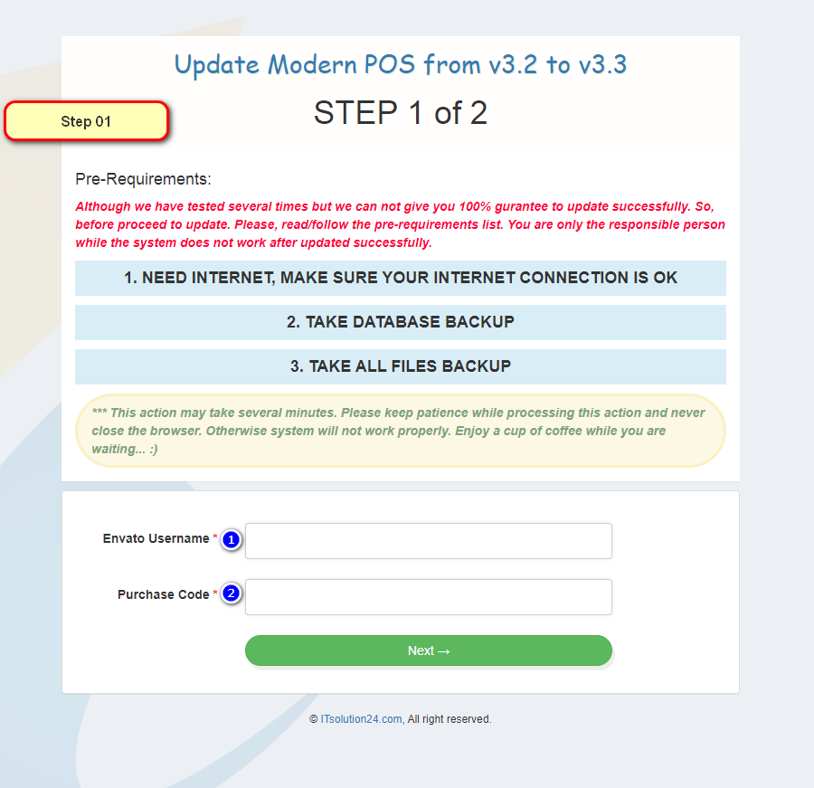
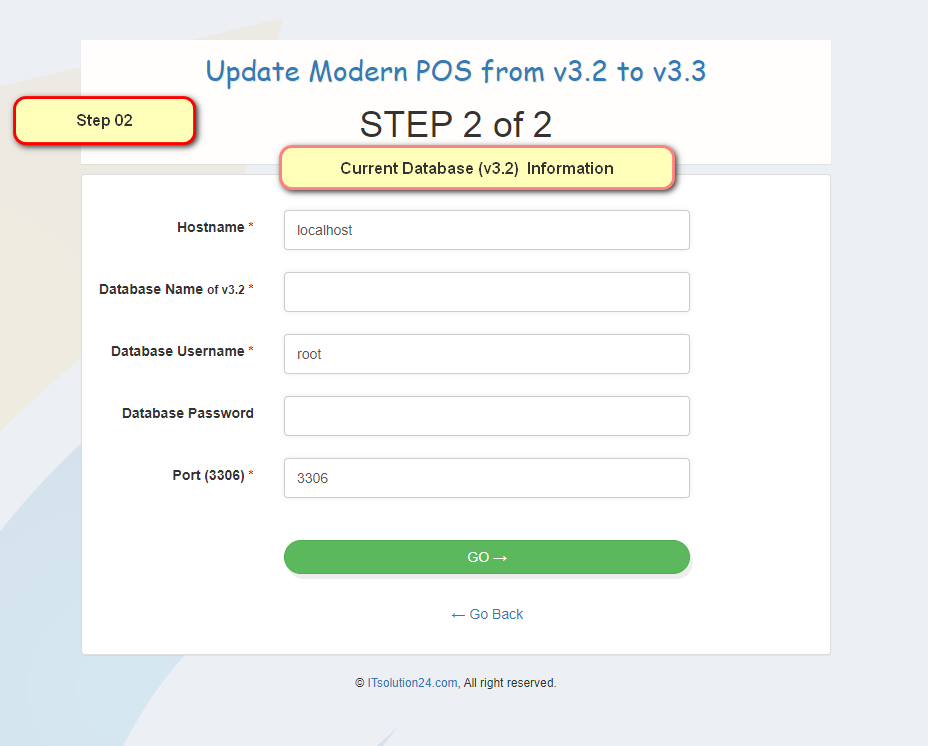

Process of update Modern POS
How to update v3.2 to v3.3 ?
Pre-Requirements:
- Need internet connection (Mandatory).
- Disable Mysql strict mode, Run this this as sql for disable strict mode
set global sql_mode=''; (Mandatory).
- Take a backup of database
- Take a backup of all files/folder
Note: if you have installed the system in cpanel and use shared hosting, you may need to ask your hosting provider to disable the strict mode, because of lack of permission
Follow this steps:
- STEP-01: Download the update version from codecanyon. Extract the zip file and replace the old version
- STEP-02: Browse: http://YOURSERVER.com/modernpos/update.php

- STEP-03: Provide your Envato username & product purchase code
- STEP-04: Click on Go button

- STEP-05: Provide details information of old database(v3.2) like Hostname , Database, Username,Password & port
- STEP-06: Click on Go button
- It may take several minutes to complete, While completing then a pop up alert will be shown as "Update Successful! Congratulations, System successfully updated to version v3.3"
- You have done all process. Thank you
Post-Requirements:
- Dashboard > store settings > Check these setting
- Check Timezone in General section
- Select deposit account in General section
- Check Reference format In POS setting section
- Click on Update
*** Don't forget to take a backup of your old database and files.
*** If there show any nearly unreadable error in alert box, then check your provided (STEP-05) value and try again!!!
*** You must check timezone after revalidate/update Modern POS